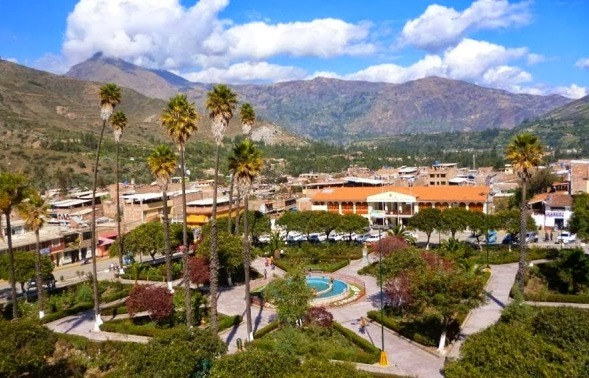

Carhuaz
Carhuaz, es el nombre de una de las provincias que conforman la región de Ancash, en Perú. La capital de esta provincia es la ciudad homónima. Carhuaz, se halla en el mismo Callejón de Huaylas y cuenta en su territorio con hermosos atractivos turísticos.
Entre los atractivos turísticos que se hallan en la provincia de Carhuaz, se reconocen lugares como el Pueblo de Marcará, que se localiza al margen izquierdo del Río Santa, a 7 Km de la ciudad de Carhuaz; el poblado es importante, además de para el turismo vivencial, porque presenta construcciones actuales, que conviven bastante próximas a restos arqueológicos; de hecho, a escasa distancia del casco urbano de este poblado se hallan las ruinas de Huaricoto.
En cuanto a atractivos ecológicos dentro de la ciudad, resalta la Quebrada de Hualcán; dicho lugar se halla conformado por diferentes caídas de agua, además, en el territorio que ocupa, es posible observar otros atractivos como restos arqueológicos, hermosas vistas panorámicas, y hasta la presencia de pinturas rupestres. La ruta de la Quebrada de Hualcán, es un interesante sendero para practicar el trekking, realizar excursiones y hasta acampar.
En la provincia de Carhuaz también existen varias lagunas que se pueden visitar, una de aquellas es la Laguna RajunPaquinan, que se alimenta de los nevados Hualcán y Copa. El camino hacia esta laguna de Carhuaz, es una estupenda ruta de trekking, especialmente de aclimatación, ya que para llegar hasta ella, es necesario realizar una caminata de cinco horas. Otra laguna que se halla próxima al Nevado Hualcán, es la Laguna 513, que también presenta un interesante sendero para el trekking, aunque el camino hasta aquella, suele presentar pequeñas avalanchas que llegan incluso, hasta el mismo ojo de agua. |